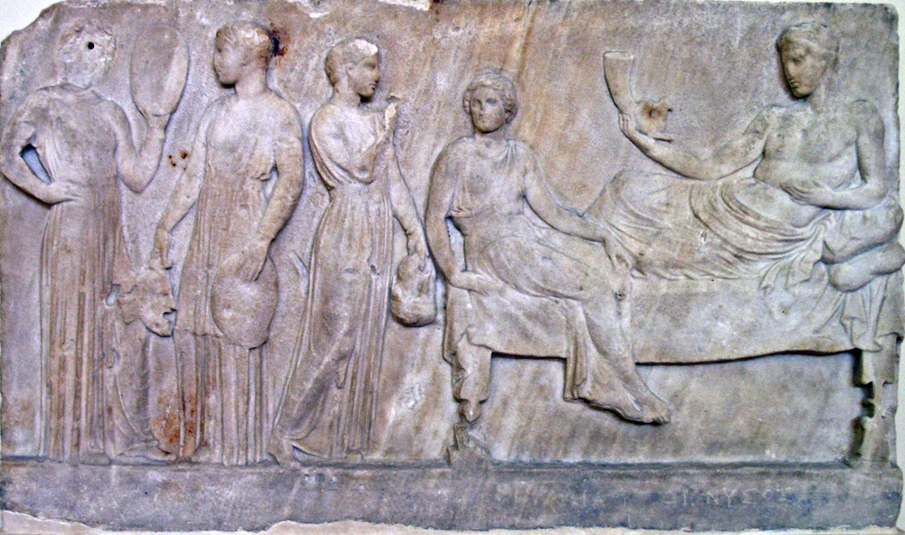
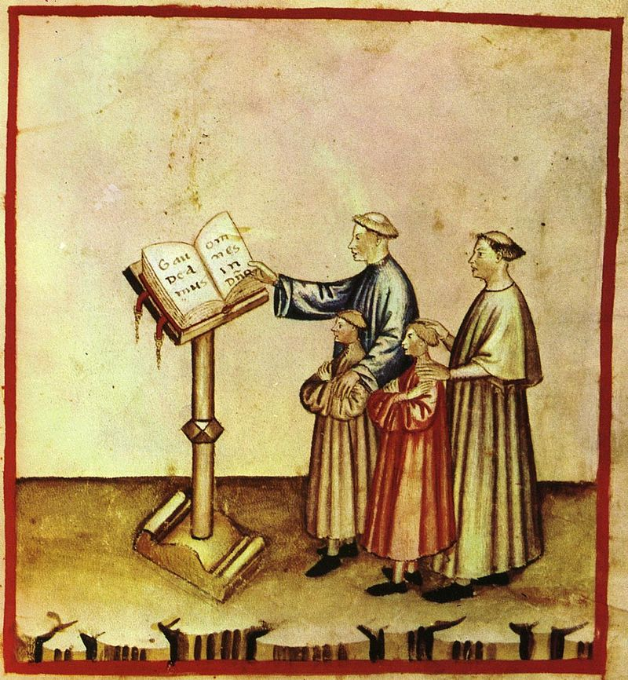
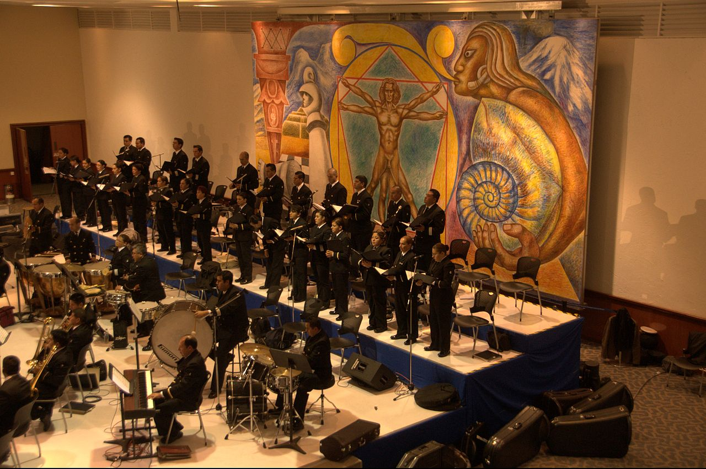
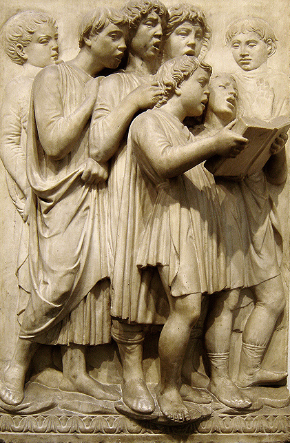

The concept of a group of singers coming together in large groups is something that has exsisted all throughout history, and has been a part of many cultures. The oldest recognized choir is from ancient Greene! From the Medieval times to the Renaissance, chorus continued to be a common part of sociery, most notably in the Catholic Church. In older times-1400s- singing for your church gave a ton of great oppurtunites for living and education. Most choirs were big but didn't do as much as today, mostly being plainsong. As time went of choirs become more or more complex, starting to sing as sections instead of soloists, and the growth of secular choirs eventually led to the creation of opera, which used choirs often. There have been even larger choirs made going on, getting up to 6.500 singers! In modern times, most schools have some sort of choir oppurtunites, and in churches there are almost always a choir singing music. Choir has become a stable in the world's cultures.